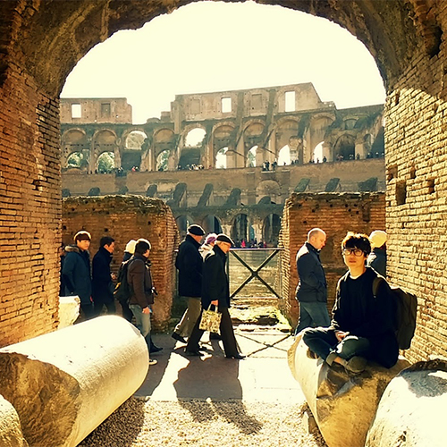
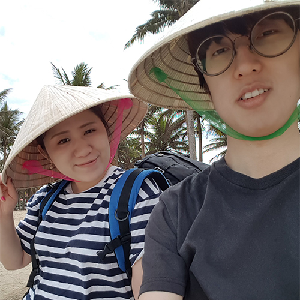
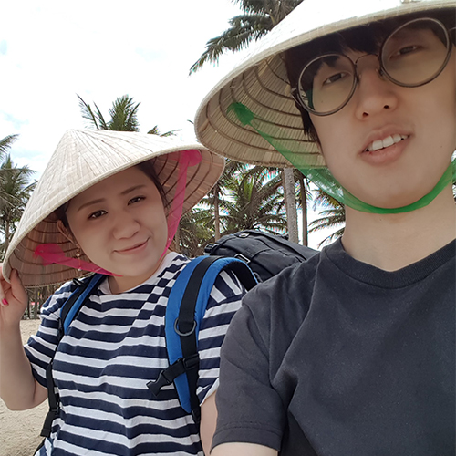

Vitæ
Full CV in PDF.
-
{% for exp in site.data.experience.experiences %}
-
{% if exp.category == "work" %}
{% else %}{% endif %}{% endfor %}{{ exp.place }} {{ exp.time }}{{ exp.title }}
{{ exp.subtitle }}Miscellaneous



 


Up until I made it to a college, all my life, I lived in the same neighborhood. My high school classmates were also my elementary school classmates. While it was a comfortable and familiar place, I've always been drawn to the thrill of adventure and new challenges. This love for adventure naturally turned into a big passion for travel, letting me dive into all sorts of cultures.
My wife has been my travel companion since we first met in Singapore in 2014. Together, we have explored numerous destinations. My favorite places are volcanic mountain near to Jogjakarta in Indonesia and the breathtaking views of Banff in Canada. The culinary discovery is often the highlight of our travels. The rich flavors of banh mi from Vietnam are unforgettable, with each bite transporting me back to those bustling streets. And then there's ChaoZhou cuisine, a sensory delight I first experienced in my wife’s hometown of Hong Kong.